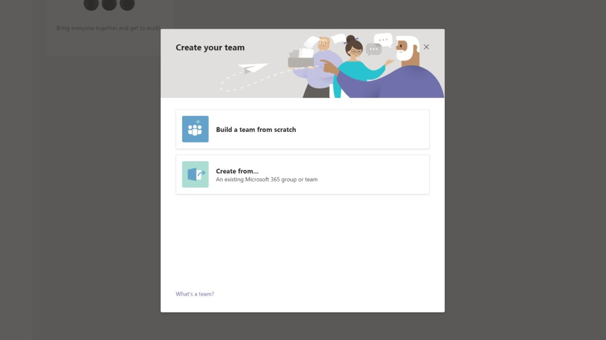

Cyber
HUB
Teams - Create a Team
Step 1 - Open the Teams tab on the left-hand side.
Step 2 - Click Join or Create a team at the bottom of the screen.

Step 3 - Choose whether to Build a team from scratch or pull in contacts from an existing group or team.
Step 4 - Select privacy settings: Private, Public, or Org-wide.
Step 5 - Enter a name and description.
Step 6 - Once the conversion process is complete, the folder containing the recording files will open. Note: By default, the audio/video file (MP4) will be named Zoom_0.mp4. The audio only file (M4A) is named audio_only.m4a.
Contacts